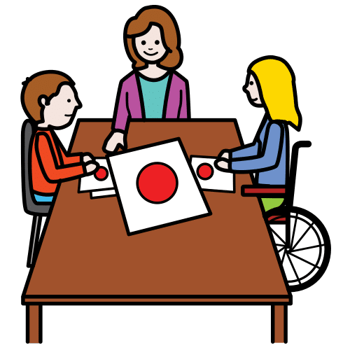
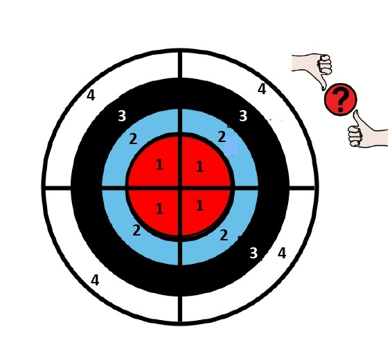
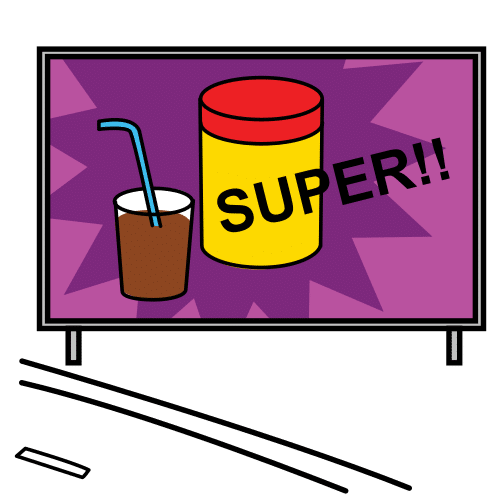

Diccionario Lectura Facilitada
Aplicación

Programa de ordenador o de móvil para usarse para algo.
Ejemplo:
Descargué una aplicación de música en mi nuevo móvil.
Conflicto
 Definición:
Definición:
Problema o situación de discusión.
Ejemplo:
Sandra pudo resolver el conflicto entre sus compañeros.
Consensuar

Adoptar una decisión de común acuerdo entre dos o más partes.
Ejemplo:
Hemos llegado a un consenso.
Consumo responsable
 Definición:
Definición:
Es consumir bienes y servicios teniendo en cuenta las consecuencias que tendrá ese consumo en el medio ambiente.
Ejemplo:
Debemos tener una actitud de consumo responsable para cuidar nuestro planeta.
Cooperar

Definición:Actividad realizada por dos o más personas con un mismo objetivo.
Ejemplo:
Hemos realizado en clase un trabajo en grupo de manera cooperativa.
Denominador
 Definición:
Definición:
Es el número inferior en una fracción e indica el número de partes en que se divide la unidad.
Ejemplo:
1/2 representa una fracción, donde 1 es el numerador y 2 el denominador.
Descubrir
 Definición:
Definición:
Encontrar algo.
Ejemplo:
Gracias a la encuesta descubrimos las dificultades de la población.
Dialogar
 Definición:
Definición:
Hablar con más personas sobre un tema o una cuestión.
Ejemplo:
Los miembros del grupo deben dialogar para llegar a un acuerdo.
Diana de evaluación
Definición:
Herramienta para evaluar.
Ejemplo:
Usaremos la diana de evaluación para valorar nuestros aprendizajes.
Diario de campo
Definición:
Cuaderno pequeño y fácil de transportar. Sirve para tomar notas y registrar observaciones.
Ejemplo:
Durante la excursión al jardín botánico usamos un diario de campo hecho con material reciclado. En el diario guardamos diferentes tipos de hojas.
Emprendedor/a
 Definición:
Definición:
Persona que dirige una empresa o un objetivo, dedicada a conseguir un cambio social y obtener ganancias para las personas que más lo necesitan.
Ejemplo:
La joven fue emprendedora y aprovechó una oportunidad para crear la empresa de sus sueños.
Empresa
Definición:
Organización de personas y recursos que buscan conseguir un beneficio económico con el desarrollo de una actividad.
Ejemplo:
En la empresa de mi madre hay muchos trabajadores.
Encuesta
 Definición:
Definición:
Serie de preguntas que se hace a muchas personas para reunir datos o para saber la opinión pública sobre un asunto determinado.
Ejemplo:
Rellenamos una encuesta para conocer nuestras aficiones y actividades en el tiempo libre.
Entrevista
 Definición:
Definición:
Diálogo que mediante preguntas se obtiene información sobre un tema o persona.
Ejemplo:
Realizamos una entrevista a una persona experta para que nos ayudara con sus consejos.
Eslogan
Definición:
Frase publicitaria breve, ingeniosa y fácil de recordar.
Ejemplo:
Los desodorantes suelen tener eslóganes muy ingeniosos.
Fracción
 Definición:
Definición:
División o participación de la unidad en partes iguales.
Ejemplo:
La fracción ⅜ representa las porciones de pizza que se han comido.
Gestionar
 Definición:
Definición:
Organizar un negocio o empresa.
Ejemplo:
Piñonate y Numeria gestionan muy bien su panadería.
Iniciativa
Definición:
Es una cualidad de algunas personas para: crear o emprender cosas.
Ejemplo:
Las personas emprendedoras tienen mucha iniciativa para los negocios.
Intereses
 Definición:
Definición:
Preferencia hacia una persona, objeto o situación.
Ejemplo:
Juan dijo que sus intereses estaban relacionados con la lectura.
Investigar
Definición:
Estudiar un tema en profundidad.
Ejemplo:
Pedro sabe mucho de ese tema porque lo ha investigado a fondo.
Logo
Definición:
Símbolo formado por imágenes que sirve para identificar una empresa.
Ejemplo:
Se ha encargado a un diseñador el logo de nuestra empresa.
Magnitud
 Definición:
Definición:
Propiedad de los objetos que se puede medir.
Ejemplo:
Hicimos un experimento en clase para comprobar la relación entre las magnitudes longitud y tiempo.
Reflexionar
 Definición:
Definición:
Pensar despacio sobre un asunto.
Ejemplo:
Antes de comprar algo debes reflexionar sobre si realmente lo necesitas.
Rúbrica de autoevaluación
 Definición:
Definición:
Herramienta que permite evaluarse a sí mismo la adquisición de los contenidos trabajados.
Ejemplo:
Usé una rúbrica de autoevaluación para saber qué aspectos debía reforzar.